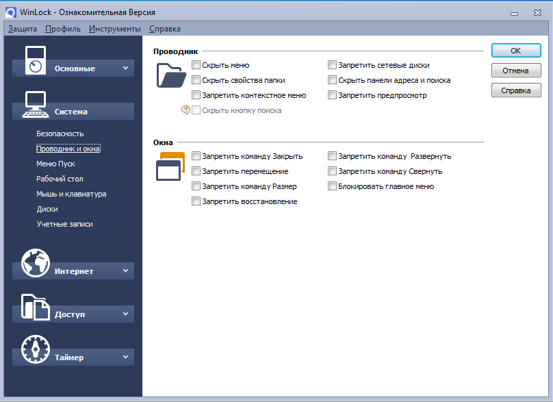

WinLock-программа, предназначенная для ограничения времени и функционала в операционной системе Windows. Данная версия программы является ознакомительной, некоторые функции заблокированы.
Рис. 1. Главное окно программы
На рисунке выше изображено главное окно программы. В окне можно включить защиту системы, а также ввести пароль.
Рис. 2. Общие настройки программы
- Возможности основных настроек:
- Защита при загрузке- программа автоматически будет включаться при загрузке.
- Мониторинг системы- в этом случае программа постоянно будет отслеживать действия пользователя чтобы предотвратить возможные нарушения параметров безопасности WinLock.
- Скрывать пиктограмму – из трея панели задач пропадает пиктограмма программы.
- Защита от выгрузки- предотвращение выгрузки WinLock при помощи менеджера задач.
- Самозащита – механизм защиты программы от изменения или удаления собственных файлов на диске и процессов в памяти.
Рис. 3. Задание пароля
При задании пароля также отображается уровень его сложности.
 Рис. 4. Аутентификация
Рис. 4. Аутентификация
При открытии программы или же при разблокировке выводится данное окно, которое требует ввода пароля.
Рис. 5. Общие и дополнительные настройки систем
С помощью общих и дополнительных системных настроек можно блокировать доступ таких системных параметров, как редактирование реестра, запрет обновления Windows, запрет вызова диспетчера задач и так далее.
Рис .6. Настройка проводника и отображение окон
Также можно полностью изменять настройки отображения элементов проводника и окон.
Рис. 7. Настройка Меню Пуск и элементов панели задач
В WinLock можно скрывать элементы в Меню Пуск и панели задач.
Рис. 8. Настройка параметров рабочего стола
Имеется возможность изменения параметров рабочего стола. Так, используя WinLock, можно полностью заблокировать доступ к рабочему столу. Никто из пользователей не сможет провести редактирование рабочего стола. Или же запрет на переименование ярлыков и файлов, в данном случае любой файл, находящийся на рабочем столе, невозможно будет переименовать.
Рис. 9. Настройка блокировки горячих клавиш и кнопок мыши
WinLock также умеет блокировать комбинации клавиш (горячие клавиши) и кнопки мыши.
Также можно скрыть диски на жестком носителе. В таком случае их не будет видно в окне компьютера и проводника. Помимо этого, можно установить запрет на чтение съемных носителей.
Есть возможность блокировки сайтов, на картинке выше представлена выбор того, что делать с блокируемым сайтом, в данном случае мы можем закрыть его или перенаправить пользователя на любой другой сайт, заданный нами.
При настройке параметров интернета можно задать веб-ресурсы, доступ к которым будет разрешен в случае, если будет включена блокировка интернета.
Имеется возможность блокировки сайта по ключевым словам, достаточно добавить их в базу, и при обнаружении слова на сайте, сайт будет блокироваться.
Основная функция WinLock – установка таймера или временного интервала, в течении которого возможна работа за устройством.
Рис. 15. Окно с настройком удаленным доступом
Управление и настройка WinLock может осуществляться удаленно с помощью программы WinLock Remote Administrator. Эта программа является сетевым средством управления для клиентов WinLock в сетях Windows. Недостатком данной опции является то, что для удаленного доступа требуется программа WinLock Remote Administrator. Стоимость такой программы начинается от 5-ти тысяч рублей за управление 10-тью компьютера.
Рис. 16. Разблокировка
Режим разблокировки компьютера представлен на рисунке 16. Доступ не будет получен, пока мы не введем правильный пароль.
Рис. 17. Сравнение и стоимость продукта
На рисунке 17 можно увидеть сравнение обычной и профессиональной версии. Что касается стоимости, то стоимость стандартной версии составляет 1460 рублей, профессиональная – около 1900 рублей. Данная версия программа является ознакомительной, лицензия продукта длится только 30 дней.
Данный продукт оптимально использовать в учебных заведениях или в средних, или крупных организациях. Так, если имеется школа, то данную программу можно использовать в классах информатики, так как зачастую ученики могут свободно использовать все функции операционной системы, что может нанести вред компьютеру. Но с учетом программы WinLock можно ограничить доступ к системным файлам, запретить изменять настройки системы, ограничить доступ к веб-ресурсам и самое главное, установить запрет на чтение съемных носителей.
- Достоиства программы:
- удобный и понятный интерфейс
- наличие справочника со всеми разъяснениями
- огромный функционал
- Недостатки программы:
- Платный продукт
- Ознакомительная версия ограничена по времени
- для управления удаленным доступом требуется покупать отдельную программу